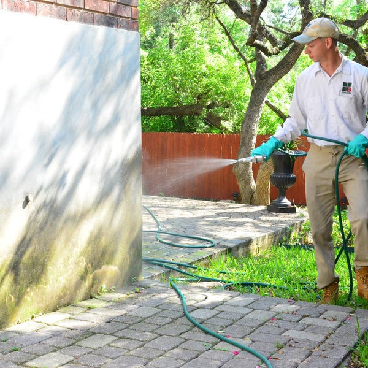

Target Audience
The sites target audience will be focused towards people whos work is effected by streaks of weather.
People like farmers can benefit from knowing how long its been since the last almost as much as they can from know when the next rain may come.
These thing effect when to plant and when to harvest.
People in pest control are similarly effected by weather patterns.
The amount of time since the last rain fall and the next can effect what thier treaments look like.
They will use different chemicals, in different forms, in different locations depending on weather patterns and expected pest infestations.
Personas
Persona 1
Christine Sutherland

- Occupation: Local Farmer
- Demographics and Education: 37 years old local farmer with a Bachelors in Agriculture
- Goals and motivation for using the site: Stay on top of local weather conditions. Plan based on recent, future and historical weather conditions.
- Social: Enjoys time with family and friends as time allows. Reads for relaxation and entertainment in the evenings.
- Technology: Uses technology when it is helpful, but prefers to work with her hands when possible.
- Quote: "I trying to learn as much as I can. It will all be useful at some point."
Persona 2
Michael Furlong

- Occupation: Pest control technician
- Demographics and Education: 24 years old pest control technician with a High School diploma
- Goals and motivation for using the site: Stay on top of local weather conditions. Plan for clothing, weather gear and appropriate chemicals and tools for the day or week.
- Social: Spends a lot of time on social media to keep in touch with friends. Hangs out with girl friends after work. Visits family a couple times a year.
- Technology: Comfortable with modern technology. Learns about web site design and creation in his spare time.
- Quote: "The only good bug is a dead bug."
Scenarios
- What is the weather going to be like today?
- What should I wear this week?
- How much longer will it rain?
- How will the incoming weather effect the area?
- What happened last time a given weather pattern happened?
- How long has the current weather been like this?